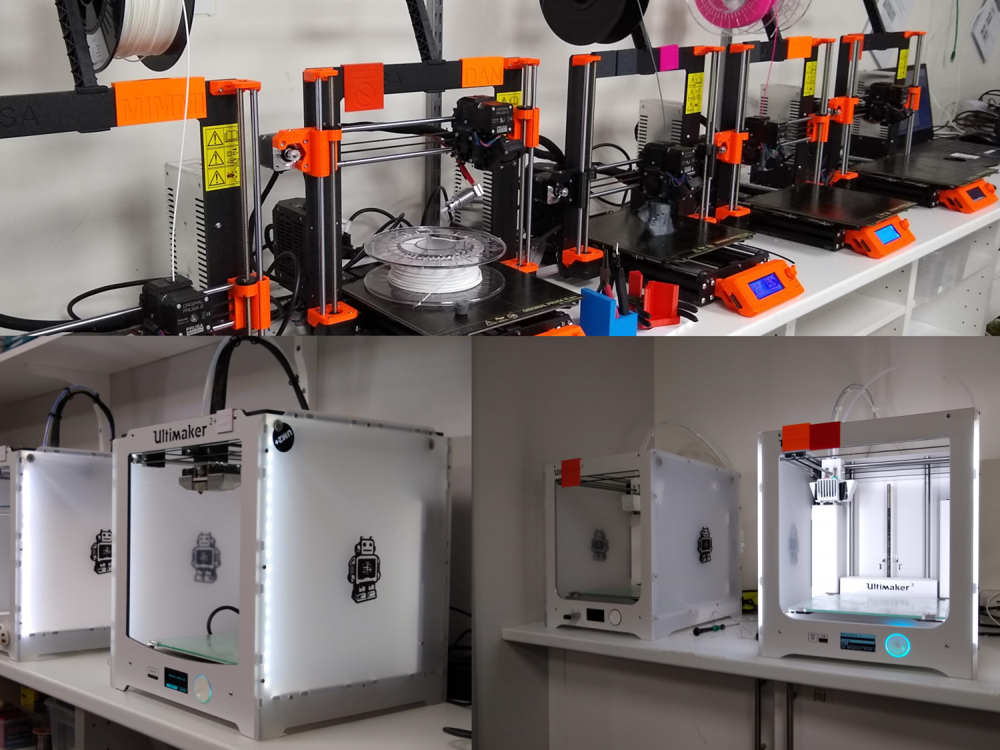

I Makerspace finns många verktyg för att skapa, men det som lockar flest är nog ändå 3D-skrivarna. Vi har sex stycken Prusa i3 MK3s, två Ultimaker 2+ och två Ultimaker 3. Den sistnämnde kan skriva ut med 2 färger. För att få använda skrivarna måste man ta en kort kurs på en eftermiddag, även om man redan vet hur en printer fungerar. Sedan får man en namnskylt som man använder som körkort, och för att andra ska se vem som använder skrivaren. Filament (materialet man använder) är helt gratis under en viss tidsgräns.
